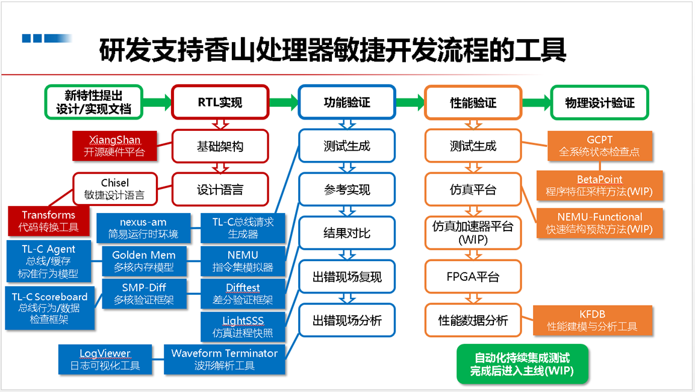
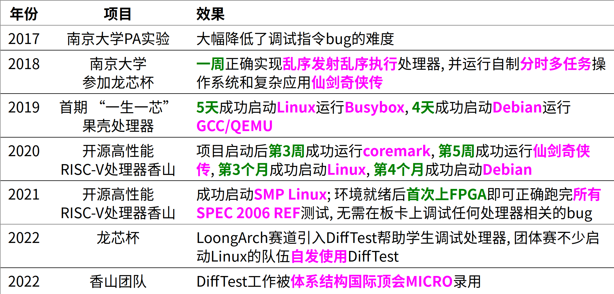
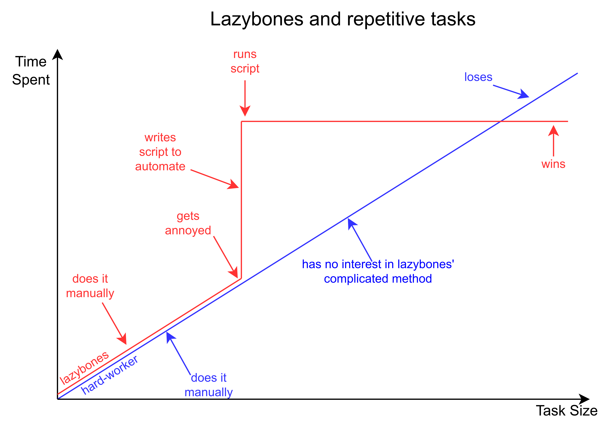
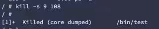
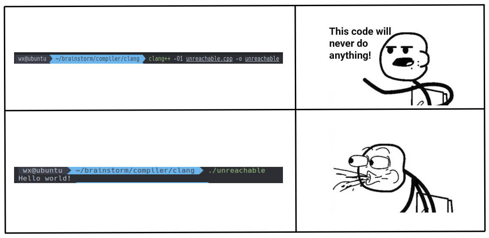
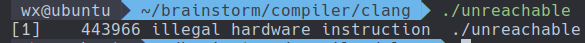
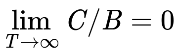

Overview
- Q1 (Why): 为什么使用Linux？
- Q2 (What): "彻底"有多彻底？
- Q3 (How): 如何将"彻底"进行到底？
Q1: 为什么使用Linux?
工具的作用
You are your tools -- Daniel Lemire
拯救程序员无数次的自动化工具
- Type safety check
- -Wall -Werror
- Differential testing
- Model checker
- TLA+ by Leslie Lamport;
- Java PathFinder (JFP) 和 SPIN
工具带来的效率提升
熟悉项目
- 打印项目构建过程
make -n -j$(nproc) > make_log
- make it human friendly
%!grep -ve '^\(\#\|echo\|mkdir\|make\)' # 过滤掉无用信息
%s/ /\r /g # 将空格替换为换行符
%!grep -vE '^ -[^co].*$' # 删除模式为所有"^ *$"的行删除掉，保留"^ [co]$"
%s/\v( \n){3,}//g # 删除模式为至少出现三次“空格后跟换行符”的行
敏捷开发
香山处理器项目的基础设施
2021年RISC-V中国峰会, 工具类报告占香山团队报告总量55%(12/22)

敏捷开发
效率的实际体现

Linux高度可定制化
- 配置精简：Lfs、Gentoo、Archlinux
- 高效垃圾回收：你的服务器已经数年未关机
最小化的linux
$ tree minimal-linux
.
├── initramfs
│ ├── bin
│ │ └── busybox
│ └── init
├── Makefile
└── vmlinuz
强（无）大（尽）生（折）态（腾）
- Archlinux
- 庞大的软件仓库，社区的geek们帮我们做了99%的事情
- 强大的包管理
- 无需添加奇怪的repo
- 解决地狱依赖
Some packages could not be installed. This may mean that you have
requested an impossible situation or if you are using the unstable
distribution that some required packages have not yet been created
or been moved out of Incoming.
The following information may help to resolve the situation:
The following packages have unmet dependencies:
package1 : Depends: package2 (>= 1.8) but 1.7.5-1ubuntu1 is to be installed
E: Unable to correct problems, you have held broken packages.
强（无）大（尽）生（折）态（腾）
- NixOs
- 可重新构建：软件包相互隔离，机器A work -> 机器B work
- 可靠性：软件的安装和更新不会相互影响，版本滚动极其简单
声明式系统管理：所有软件环境都可用nix语言声明
- 可重新构建：软件包相互隔离，机器A work -> 机器B work
Core advantage
只需NixOS的配置文件， 就能恢复出完全相同的软件环境
- NixOS不直接管理数据，但其可以很好的管理数据同步软件
Linux philosophy
Shell 是一门 “把用户指令翻译成系统调用” 的编程语言
- “Command-line interface” (CLI) 的巅峰
- (今天的 GUI 并没有比 CLI 多做太多事)
基于文本替换的快速工作流搭建
- 重定向:
cmd > file < file 2> /dev/null - 顺序结构:
cmd1; cmd2,cmd1 && cmd2,cmd1 || cmd2 - 管道:
cmd1 | cmd2 - 预处理:
$(),<() - 变量/环境变量、控制流……
Linux philosophy
Job control
- 最小化(在后台运行) - C-Z + bg
- 或运行命令时通过末尾添加&指定后台运行
- 任务栏 - jobs
- 最大化 - fg
- 关闭 - kill
- 一般通过kill -9 进程号强行关闭
- 任务管理器 - ps aux, top, htop
有什么好处? 这些在GUI下点点鼠标也能做
Linux philosophy
1、 比较两个文件是否完全相同
-
CLI下的解决方案
- 文本文件的比较:
vimdiff file1 file2 - 非文本文件的比较:
diff file1 file2 - 很大的文件:
md5sum file1 file2
- 文本文件的比较:
- GUI下的解决方案
- 下载一个计算MD5的GUI工具
一次也省不了多少时间 😕
Llinux philosophy
2、查笔记
- GUI
- 暴击文件管理器（or浏览器） 💀
- CLI（演示）
- one command line
doc
3、CPU主频监视器
watch -t -n 1 "cat /proc/cpuinfo | grep MHz | awk '{print \$1 NR \$3 \$4 \$2}'"
Linux philosophy
有些稍微复杂的事GUI几乎做不了
例子: 列出一个C语言项目中所有被包含过的头文件
- 如何用GUI实现?
CLI的解决方案:
find . -name "*.[ch]" | xargs cat | grep "^#include" | sort | uniq
体现出的Unix philosophy
- 每个小工具只做一件事, 但做到极致
- 小工具采用文本进行输入输出, 从而易于使用
- 通过小工具之间的组合来解决复杂问题
Linux philosophy
自动化脚本
- 人的按键频率(~4HZ) vs. CPU的工作频率(~4GHZ)
- 手指-计算机的按键墙 <==> 内存-CPU的内存墙

Linux philosophy
使用工具 = 编程
- 标准小工具之间的组合 -> shell编程
- vim -> 命令编程(dd->删除1行, 10dd->删除10行)
- grep/awk/sed -> 正则表达式编程
Unix is user-friendly
Q2: "彻底"有多彻底？
持续化工作流
++--------------------------------------------------------------+
|+--------------------------------------------------+ |
||+---------------------------------+ | |
|||+----------------+ | | |
|||| | | | |
vvvv |N Y |N Y |N Y |
读代码 => 写代码 => 写完? --> 编译 => 正确? --> 运行 => 正确? --> 下一个功能
- 如何提升写代码的效率?
- 如何提升编译的效率?
- 如何提升调试的效率?

写代码
更现代的CLI工具
- ripgrep
- 部分场景比grep快接近一个数量级
- 自动忽略.gitignore和.ignore中指定的文件
- tldr
- 快速查阅工具使用方法
- ranger
- 彻底摆脱GUI文件管理器
- fzf（瑞士军刀）
- 极速
- 完美体现Unix philosophy
编译
Compilation & Assembly
- 编译缓存：ccache
bear -- make -j$(nproc)
without ccache 2:14.76 total
with ccache first time 2:42.42 total
make clean && with ccache second time 40.062 total
学习成本：30s(STFW: improving build speed on Linux) + 30s(RTFM: configure ccache)
- 分布式编译：icecream
编译
Linking
# Just modified several compilation unit
bear -- make -j$(nproc)
without cache 10.271 total
with ccache 9.987 total
可以更快吗？（STFW: make linker faster）
with mold 1.433 total
编译
脑科学研究表明: 人脑的短期记忆容量是有限的(7±2个单元)
- 等1s, 基本上可以持续工作
- 等10s, 你就开始想别的了
- 等30s, 你大概率去摸手机了
- 摸一下5min就过去了
扩大可持续工作时间的比例
调试
- prerequisite
- STFW: 工具的演进过程中隐藏了很多有用信息，如gdb是GNU readline工具
- RTFM: gdb提供了完备的编程接口
- configure
- readline: 默认的配置文件$HOME/.inputrc
# gdb 窗口切换快捷键
$if gdb
"\C-j":"focus next\r"
"\C-k":"focus prev\r"
$endif
# 按下CTRL-O，在光标后面添加 "> output.txt"
Control-o: "> output.txt"
调试
- configure
- script
- Ctrl+r for fzf history reverse search
- ↑ key for partial string matching in history
- TAB for auto-completion with:
- fzf (When fzf is installed)
- floating window (Similar to IPython's auto-completion)
- fish-like autosuggestions (→ key to accept the suggestion)
- script
调试
一个重要的踪迹工具: strace
打开黑盒的方法
- 看源码(source): 可以得知每一处静态细节, 但较繁琐
- 看踪迹(trace): 可以了解运行动态行为, 但不全面
- 不过却容易理解!
例1："ls"命令是如何被找到的
strace -f bash -c "ls" 2>&1 | nvim - # -f 跟踪子进程
例2：用户如何与man交互
strace -o strace.log -f man ls # -o 将跟踪结果重定向到指定文件中
tail -f strace.log # 持续输出追加的数据
Q3: 如何将"彻底"进行到底？
自制工具
fineperf：解决perf难以profile指定代码段的问题
#include "perf.hpp"
// ...
perf_[stat|record]("/path/to/output",[&]() {
// code needed be profiled
});
// ...
学习基础设施
从编译、操作系统、处理器的角度去理解程序的构建和执行过程
- 现代编译器和处理器都是让并行执行窗口尽可能更大，阻塞尽可能小，编译器的静态分析和动态分析都是如此
- 通过和编译器交互来扣cycle：
- 静态分析：指令调度、寄存器分配、窥孔优化 ❎
- 动态分析：如需要cost model的自动向量化/并行化 ✅
学习基础设施
从源码构建Nixos/Archlinux软件包（例如使用wine）-> 了解elf、程序的加载 -> 更清晰理解elf相关问题
- 1) The execution performance of elf with debug info is not worse than elf stripped debug info
# diff sections_with_debug secitons_without_debug
< 27 .debug_aranges 00000030 0000000000000000 0000000000000000 0000303b 2**0
< CONTENTS, READONLY, DEBUGGING, OCTETS
< 28 .debug_info 0000031b 0000000000000000 0000000000000000 0000306b 2**0
< CONTENTS, READONLY, DEBUGGING, OCTETS
< 29 .debug_abbrev 000000e2 0000000000000000 0000000000000000 00003386 2**0
< CONTENTS, READONLY, DEBUGGING, OCTETS
< 30 .debug_line 00000113 0000000000000000 0000000000000000 00003468 2**0
< CONTENTS, READONLY, DEBUGGING, OCTETS
< 31 .debug_str 00000292 0000000000000000 0000000000000000 0000357b 2**0
< CONTENTS, READONLY, DEBUGGING, OCTETS
学习基础设施
- 2) "symbol not found" of pdb log
Initial log
2 0x55dce756509c postgres: 6000, logger process <symbol not found> + 0xe756509c
3 0x7f4ddfeb2420 libpthread.so.0 <symbol not found> + 0xdfeb2420
4 0x55dce7217556 postgres: 6000, logger process <symbol not found> + 0xe7217556
5 0x55dce7218106 postgres: 6000, logger process <symbol not found> + 0xe7218106
6 0x55dce721b251 postgres: 6000, logger process <symbol not found> + 0xe721b251
. . .
15 0x55dce71f4ef4 postgres: 6000, logger process <symbol not found> + 0xe71f4ef4
16 0x55dce71f9b7b postgres: 6000, logger process <symbol not found> + 0xe71f9b7b
17 0x55dce71f6b12 postgres: 6000, logger process standard_ExecutorRun + 0x3d5
18 0x55dce71f673a postgres: 6000, logger process ExecutorRun + 0x5d
19 0x55dce756ae30 postgres: 6000, logger process <symbol not found> + 0xe756ae30
20 0x55dce756a9fb postgres: 6000, logger process PortalRun + 0x2c7
21 0x55dce75611bc postgres: 6000, logger process <symbol not found> + 0xe75611bc
22 0x55dce7567e8c postgres: 6000, logger process PostgresMain + 0x1433
学习基础设施
- 2) "symbol not found" of pdb log
Enhanced log
/home/gpadmin/piemaster/piedb_cluster/bin/postgres(tuplestore_gettupleslot+0x43) [0x55ebe93a5813]
/home/gpadmin/piemaster/piedb_cluster/bin/postgres(ExecMaterial+0x320) [0x55ebe8e2a8fe]
/home/gpadmin/piemaster/piedb_cluster/bin/postgres(ExecProcNodeGPDB+0x129) [0x55ebe8df38b6]
/home/gpadmin/piemaster/piedb_cluster/bin/postgres(ExecProcNode+0x36) [0x55ebe8e35be8]
/home/gpadmin/piemaster/piedb_cluster/bin/postgres(ExecNestLoop_guts+0x508) [0x55ebe8e362b4]
. . .
/home/gpadmin/piemaster/piedb_cluster/bin/postgres(ExecProcNode+0x36) [0x55ebe8de4f14]
/home/gpadmin/piemaster/piedb_cluster/bin/postgres(ExecutePlan+0x108) [0x55ebe8de9b9b]
/home/gpadmin/piemaster/piedb_cluster/bin/postgres(standard_ExecutorRun+0x3d5) [0x55ebe8de6b32]
/home/gpadmin/piemaster/piedb_cluster/bin/postgres(ExecutorRun+0x5d) [0x55ebe8de675a]
/home/gpadmin/piemaster/piedb_cluster/bin/postgres(PortalRunSelect+0x120) [0x55ebe915ae50]
/home/gpadmin/piemaster/piedb_cluster/bin/postgres(PortalRun+0x2c7) [0x55ebe915aa1b]
/home/gpadmin/piemaster/piedb_cluster/bin/postgres(exec_mpp_query+0xadf) [0x55ebe91511dc]
/home/gpadmin/piemaster/piedb_cluster/bin/postgres(PostgresMain+0x1433) [0x55ebe9157eac]
学习基础设施
过程
-> 找出打印调用栈的函数：backtrace_symbols
-> glibc没有调试信息，不能跟踪 😒
-> 编译glibc，跟踪backtrace_symbols
-> 只在.dynsym section中寻找Bind类型为GLOBAL和WEAK的符号
-> 加载.symtab section，找到pdb中大量Bind类型为LOCAL的static函数的符号
学习基础设施
搭建Lfs、Gentoo可能需要裁剪内核 -> 了解到运行内核的方式 -> 修改内核的信号处理机制方便调试程序
/* include/linux/signal.h */
// 1: coredump
#define SIG_KERNEL_ONLY_MASK (\
rt_sigmask(SIGKILL) | rt_sigmask(SIGSTOP))
#define SIG_KERNEL_COREDUMP_MASK (\
rt_sigmask(SIGQUIT) | rt_sigmask(SIGILL) | \
...)
// 2: handler
/* Invert the set of allowed signals to get those we want to block. */
sigdelsetmask(&mask, sigmask(SIGKILL) | sigmask(SIGSTOP));
学习基础设施
|
 |
学习成本
- 编译：内置脚本script/gen_compile_commands.py生成符号索引
- 运行：elf <-- kernel <-- qemu <-- gdb
- debug：gdb[ + printk]
学习基础设施
减轻对“黑魔法”的困惑
#include <iostream>
int main()
{
while (1) ;
}
void mayreachable()
{
std::cout << "Hello world!" << std::endl;
}
学习基础设施
|
 |
尝试解开“黑魔法”
- "while (1);" is an "undefined behavior" in C++ standard
- STFW: how llvm deal with undefined behavior
- clang（version 14及以上）默认会将UB替换为一个UB marker，不会生成任何指令，包括ret指令
验证：添加编译选项"-trap-unreachable" 😀

Life is short, use Linux
- 工具是第一生产力（使用工具 = 编程）
- Prerequisite of being a power user: STFW/RTFM
